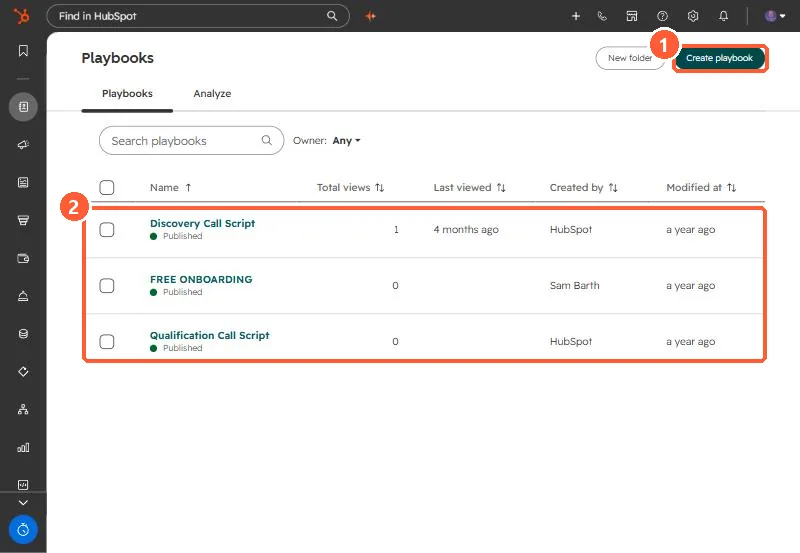

Short answer
Playbooks are interactive content cards that show on contact, company, deal and ticket records. Reps open one during a call, work through it, and save structured notes. They need a Sales or Service seat on a Professional or Enterprise plan. Creating them takes Publish or Write playbooks permissions. Editors keep a version history and can restore an earlier draft.
1. The playbooks tool
Go to CRM > Playbooks. My demo portal has HubSpot's sample discovery and qualification call scripts plus one of our own.


2. Who can do what
- An assigned Sales or Service seat is needed to create, edit, view and delete playbooks.
- Creating and editing needs Publish and/or Write playbooks permissions.
- Seat holders without those permissions can still view and use playbooks on records.
3. Manage them
Hover a playbook to edit, clone, delete, unpublish or change sharing. In the editor, Version history restores a previous draft. Folders keep long lists tidy. The Analyze tab and the views column show which ones are actually used.